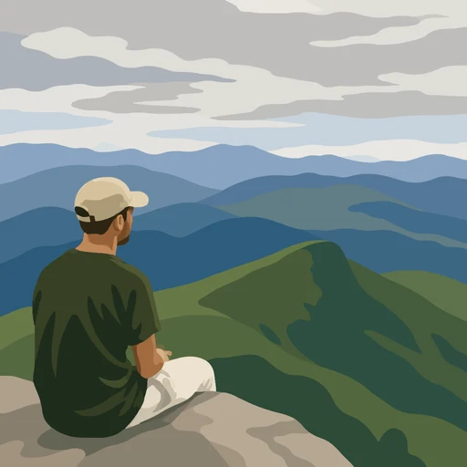

Je médite tous les jours
Merci d'écouter mes méditations guidées. Si elles vous plaisent, vous allez sûrement aimer l'application mobile que j'ai créée pour vous.
300k+ écoutes mensuelles · 600+ méditations, toutes gratuites

Merci d'écouter mes méditations guidées. Si elles vous plaisent, vous allez sûrement aimer l'application mobile que j'ai créée pour vous.
300k+ écoutes mensuelles · 600+ méditations, toutes gratuites